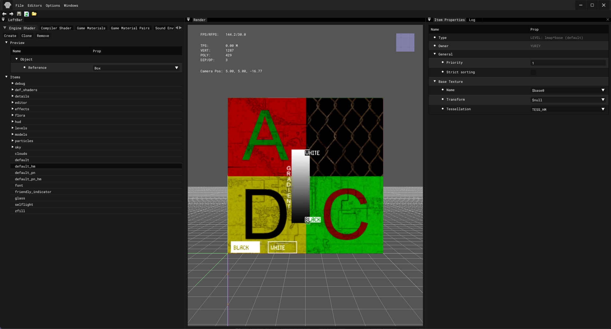

Used to create/edit shaders

| Button |
Description |
| Save |
|
| Reload |
|
| Option |
1 |
Description |
| Image |
Image Editor |
Open Image Editor |
| Synchronize Textures |
The function updates textures in the project by checking changes in the file system and synchronizing them |
| Check New Textures |
Searches for new textures in the file system and imports them |
| Sounds |
Sound Editor |
Open Sound Editor |
| Synchronize Sounds (Soft) |
Searches for new sounds in the file system and imports them. Deletes only those sounds that do not exist in the file system and are not used |
| Synchronize Sounds (Hard) |
Searches for new sounds in the file system and imports them. Deletes all sounds missing from the file system without checking if they are used |
| Light Anim Editor |
- |
Open Light Animation Editor |
| Minimap Editor |
- |
Open Minimap Editor |
| Options |
1 |
Description |
1 |
Description |
| Render |
Quality |
|
- |
- |
| Fill Mode |
Fill Mode |
Point |
Vertex point fill mode |
| Wireframe |
Wireframe fill mode |
| Solid |
Solid fill mode |
| Shader Mode |
Shader Mode |
Flat |
Flat Shading |
| Gouraud |
Gouraud Shading |
| Edged Faces |
Enables drawing of edges (wireframe) of a 3D mesh |
- |
- |
| RenderHW |
Enables GPU rendering |
- |
- |
| Filter Linear |
Enables linear texture filtering |
- |
- |
| Textures |
Enables texture display (TODO Not Working) |
- |
- |
| Draw Safe Rect |
|
|
- |
- |
| Draw Grid |
Draw viewport grid |
- |
- |
- |
| Coordinate Axes |
None |
None |
- |
- |
| Axis |
 |
- |
- |
| Cube |
 |
- |
- |
| Fog |
- |
|
- |
- |
| Mute Sounds |
- |
Mute Sounds |
- |
- |
| Real Time |
- |
Real Time |
- |
- |
| Stats |
- |
Displaying statistics |
- |
- |
| Preferences |
- |
Open Preference window |
- |
- |
| Button |
Description |
| Log |
Open Log window |
| Theme |
Editor theme |
| Icon | Description |
|---|
| Undo the last action |
| Repeat the last action |
| Save all ‘.xr’ |
| Reload everything ‘.xr’ |
| Open folder ‘GameData’ |